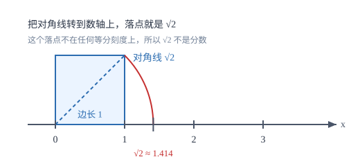

实数及其运算
有理数不够用时，数轴上的空位由无理数填满；实数就是这条数轴上所有的点。
| 所属主题 | 数与式 |
|---|---|
| 所属模块 | 代数 |
| 课标学段 | 第四学段（7~9 年级） |
| 前置知识 | 代数式与字母表示数、有理数的概念与分类 |
| 核心素养 | 抽象能力运算能力几何直观 |
教材定位
人民教育出版社《人教版（2024版）义务教育教科书·数学》
七年级下册第8章 实数8.1 平方根8.3 实数及其简单运算
对应八下 8.1 与 8.3。本篇在此基础上把「数轴上的点」与「实数」一一对应起来，并补上七上有理数运算中未展开的细节。
说明
实数分两类：有理数和无理数。有理数是能写成两个整数之比的数，包括整数和分数；它们化成小数后，要么是有限小数，要么是无限循环小数。无理数写不成两个整数之比，化成小数是无限不循环小数，初中常见的有三类：开不尽的方根（如 \sqrt2、\sqrt[3]5）、特定结构的无限不循环小数（如 0.1010010001\ldots）、以及 π 这样的常数。
把有理数和无理数放在一起，就得到实数。实数与数轴上的点一一对应：每一个实数都能在数轴上找到唯一的位置，数轴上每一个点也都对应唯一一个实数。有了这个对应，两件常用的事都落在数轴上：比较大小看左右，绝对值就是到原点的距离。
立方根是平方根的姊妹概念：若 x^3=a，则 x 叫 a 的立方根，记 \sqrt[3]a。它与平方根有两处关键差别：①任何实数都有立方根——正数有一个正立方根，负数有一个负立方根（\sqrt[3]-8=-2），0 的立方根是 0；而负数没有平方根。②每个数的立方根唯一，不存在「正负两个」。估算时用立方试：\sqrt[3]50 在 3（27）与 4（64）之间。
使用场景
当题目要求判断一个数属于哪一类时，先看它能不能化成两个整数之比，再看它的小数形式。判断 \sqrt16 时不能只看到根号就判为无理数：\sqrt16=4，它是有理数。判断 π/3 时也不能只看分母：π 是无理数，除以 3 仍然是无理数。
当题目要求比较大的数或很小的数时，用科学记数法写成 a× 10^n 的形式，其中 1≤ |a| < 10。例如 3000 亿是 3000× 10^8=3× 10^11，把「亿」先换成 10^8 再整理，指数就不会数错。
注意点
三个容易混淆的对象：平方根、算术平方根、立方根。正数有两个平方根，写作 ±\sqrta；其中非负的那一个叫算术平方根，写作 \sqrta；任何实数都有唯一的立方根，符号与原数相同。因此 \sqrt16=4，而 16 的平方根是 ± 4。
绝对值的定义是到原点的距离，所以 |a|≥ 0 恒成立，且 |a|=|-a|。化简 |\sqrt3-2| 时先判断括号内是正是负：\sqrt3<2，所以结果是 2-\sqrt3，不是 \sqrt3-2。
平方根与立方根的记号与性质要成对记：\sqrt9=± 3 中的「±」来自平方，\sqrt[3]9 只有一个值；被开方数 a≥ 0 是平方根的门槛，对立方根不作要求。
证明

图 1：单位正方形的对角线长度无法写成分数，把这条对角线转到数轴上，就得到一个不是有理数的点
证明
结论 1反证法的起点：若 \sqrt2 是有理数，则存在互质的正整数 p、q 使 \sqrt2=p/q。
假设 \sqrt2 能写成最简分数 p/q，其中 p、q 是互质的正整数。
关键一步依据是反证法（归谬法）：要证「\sqrt2 不是有理数」，只需假设它是有理数并推出矛盾；而任何有理数都可以约成「分子分母互质」的最简分数，所以这个假设不丢任何可能性。
结论 2由 p^2=2q^2 可推出 p 是偶数。
两边平方得 2=\dfracp^2q^2，即 p^2=2q^2。这说明 p^2 是偶数，而只有偶数的平方才是偶数，所以 p 是偶数，可设 p=2k。
关键一步依据是平方的奇偶性：偶数的平方是偶数、奇数的平方是奇数，所以由「p^2 是偶数」反推「p 是偶数」，于是可以设 p=2k 代回——这一步是后面制造矛盾的前提。
结论 3由 4k^2=2q^2 可推出 q 也是偶数。
代回得 4k^2=2q^2，即 q^2=2k^2，同理 q 也是偶数。
关键一步把 p=2k 代进 p^2=2q^2 得 4k^2=2q^2，两边同除以 2 得 q^2=2k^2，右边是 2 的倍数，所以 q^2 是偶数，再用同一条平方奇偶性得 q 是偶数。
结论 4\sqrt2 写不成两个整数之比，它不是有理数。
于是 p、q 都是偶数，与「p/q 是最简分数」矛盾。矛盾说明最初的假设不成立，\sqrt2 写不成两个整数之比，它不是有理数。
关键一步依据是最简分数的定义：分子分母互质，不可能同时为偶数（同时为偶数还可以再约分）。既然假设推出了矛盾，就说明假设不成立；再由有理数的定义（能写成两个整数之比），得 \sqrt2 不是有理数。
动手实验
在方格纸上画一个边长为 1 的正方形，量出对角线长约 1.414；再把这个长度转到数轴上（如图 1），落点确实在 1 与 2 之间，却不落在任何「把 1 到 2 平均分成若干份」的刻度上。用计算器把 \sqrt2 算到十位小数，也看不到循环节——这正是无理数的直观样子。
解题思路
实数题的通用流程是四步：第一步定符号与范围，先判断正负、在哪两个整数之间；第二步化简，把根式、绝对值、零指数与负指数统一处理；第三步比较大小，正数可以平方后比，负数先比绝对值再取反；第四步回到题意，看问的是精确值还是估算值。
比较大小有三条通路，选哪条取决于数的形态。同号根式比大小，平方后比较被开方数；一个是根式一个是整数，把整数写成同次根式再比，例如 3=\sqrt9；异号或含负号，先在数轴上定位，记住「右边的数总比左边的大」，所以 -\sqrt3 在 -\sqrt2 的左边。
按场景的例题
例 1（场景：测量与工程） 正方形花坛铺对角线方向的石板
一个正方形花坛边长为 3 米，沿对角线铺一条石板路。对角线长 \sqrt18 米，这条路的长度在哪两个相邻整数米之间？
解：因为 16<18<25，所以 \sqrt16<\sqrt18<\sqrt25，即 4<\sqrt18<5。也可以用近似值核对：\sqrt18=3\sqrt2\approx 3× 1.414=4.242。
答：在 4 米与 5 米之间，约 4.24 米。
例 2（场景：数据调查） 北斗卫星日定位量的数据表示
某地图软件调用的北斗卫星日定位量超过 3000 亿次，用科学记数法表示这个数。
解：1 亿 =10^8，所以 3000 亿 =3000× 10^8=3× 10^3× 10^8=3× 10^11。检查 a 的范围：1≤ 3<10，符合要求。
答：3× 10^11 次。
例 3（场景：物理情境） 零件直径的误差检验
某零件标准直径为 20 毫米，允许误差是 ± 0.05 毫米。测得一个零件直径为 19.94 毫米，它合格吗？
解：误差用绝对值表示：|19.94-20|=|-0.06|=0.06。因为 0.06>0.05，超出允许范围。
答：不合格，直径偏小 0.06 毫米，超过允许的 0.05 毫米。
常用推论
\sqrta^2=|a|：先平方再开方，得到的是绝对值，所以 \sqrt(-3)^2=3，不是 -3。
几个非负数之和为 0，则每个都为 0。常见组合是 |x|+y^2=0 或 \sqrtx+|y|=0，由此可直接得到 x=0、y=0。
两个无理数的积不一定还是无理数：\sqrt2×\sqrt2=2，\sqrt3×\sqrt12=6。判断时要先算，不能凭「无理数乘无理数」下结论。
易错点
错认为 \sqrt16=± 4。
为什么错把「算术平方根」与「平方根」混为一谈。根号 \sqrt\ 本身只表示非负的那个平方根。
正确\sqrt16=4；16 的平方根才是 ± 4，写作 ±\sqrt16=± 4。
错因为 3>2，所以 -\sqrt3>-\sqrt2。
为什么错负数比较大小，绝对值大的反而小。\sqrt3>\sqrt2，取相反数后不等号要反向。
正确-\sqrt3<-\sqrt2，在数轴上 -\sqrt3 在 -\sqrt2 的左边。
错看到 3.14159 就判为无理数，看到 π/3 就因为有分数线判为有理数。
为什么错判断依据是「能否写成两个整数之比」，不是外形。3.14159 是有限小数，属于有理数；π 是无理数，除以 3 仍是无理数。
正确3.14159 是有理数；π/3 是无理数。
直观理解
把数轴想成一把尺子：有理数只是尺子上那些「能对准某一格刻度」的点，而无理数把其余的缝隙填满。开平方就是反过来问「哪个数的平方等于它」，算不出来时不要硬算，先在两个整数之间夹住它。